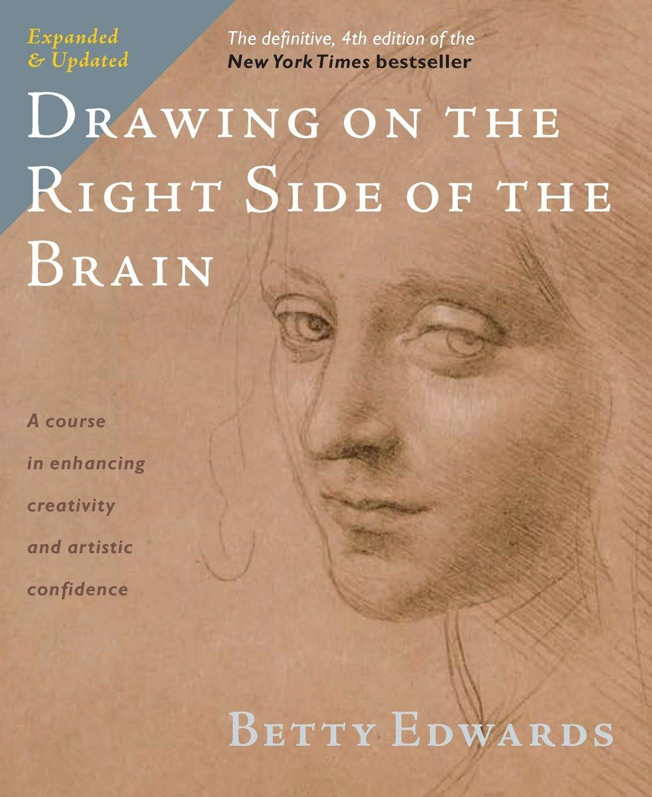
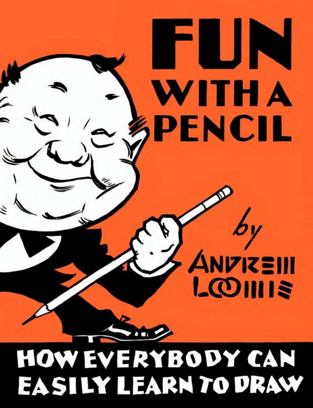

Where do I begin?
One of the first things I'd recommend would be the book that got me in art in the first place!
It's called drawing on the right side of the brain, by Betty Edwards
This book is incredible for learning the initial art skills you'll need on your journey!
after fully finishing it and following the exercises, you can definitely draw things like self-portraits, or even scenery you see on your day to day life

What's next?
Another book I'd highly recommend is Fun With a Pencil by Andrew Loomis
It started the now known Loomis method of drawing, and it's pretty much THE book to go for
if your main objective is drawing things that aren't based in reality, such as cartoons, for example
If you want to draw anime, you might think this isn't for you, but the Loomis method can prove mega useful even outside of the context of cartoons. It's extremely useful
